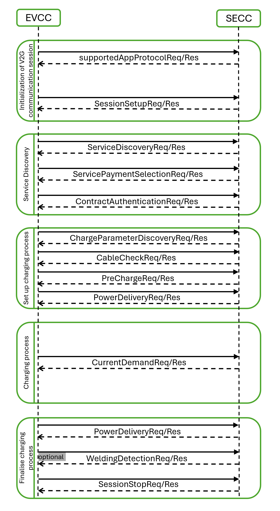

DIN 70121 Protocol
Description of the DIN 70121 Protocol implementation in the Typhoon HIL toolchain.
DIN 70121 Protocol
DIN SPEC 70121 is based on an early unpublished version of the ISO 15118-2 Protocol and defines digital communication between an electric vehicle and a DC charging station [1]. DC stands for direct current, meaning that DIN SPEC 70121 applies only to DC charging, whereas ISO 15118 covers both AC (alternating current) and DC charging modes. Another key difference between ISO 15118 and DIN SPEC 70121 is that the latter does not support Plug & Charge. This means there is no secure communication using Transport Layer Security (TLS), no digital certificates, and no XML-based digital signatures, so authenticity and data integrity cannot be guaranteed. Additionally, DIN SPEC 70121 does not support smart charging, meaning charging schedules cannot be sent to the electric vehicle to enable smarter and more grid-friendly charging.
Message sequence for a DIN 70121 charging session
The charging process for a charging session carried out by DIN 70121 is illustrated in Figure 1.

- Initialization of V2G communication session:
- supportedAppProtocol: The EV and the charging station use this request-response message pair to agree upon a protocol version, where the VersionNumberMajor must match, while a mismatch in VersionNumberMinor is tolerated during the transition phase.
- SessionSetup: Used to assign a unique session ID for a communication session.
- Service Discovery:
- ServiceDiscovery: EV requests the charging station about its offerings.
- ServicePaymentSelection: This message pair enables the transmission of the chosen PaymentOption, SelectedServices, and their associated ParameterSets, based on the provided services and payment options by the SECC. ExternalPayment is the only allowed PaymentOption.
- ContractAuthentication: In the DIN 70121 protocol, the request for this message does not contain any elements; it is sent empty.
- Set up charging process:
- ChargeParameterDiscovery: Once authorized for charging at the EVSE, the EV sends a charge parameter discovery request to the EVSE. This message conveys the EV's status and includes parameters such as estimated energy requirements for recharging and the expected end of charge time. In response, the EVSE provides its status information along with the currently applicable power output limits. In the DIN 70121 protocol, the field EVRequestedEnergyTransferType can be either DC_core or DC_extended.
- CableCheck: For safe DC charging, a cable check shall be performed. The CableCheckReq asks for the cable check status of the EVSE and e.g. tells the EVSE if the connector is locked on EV side and if the EV is ready to charge. After receiving the CableCheckReq, the SECC sends the CableCheckRes with the information of cable check and EVSE status.
- PreCharge: Pre charge is used for adjusting the EVSE output voltage to the EV battery voltage to minimize the inrush current when the contactors of the EV are being closed. With the pre-charging request the EV asks the EVSE to apply certain values for output voltage and output current.
- PowerDelivery: The Power Delivery message exchange marks the point in time when the EVSE provides voltage to its output power outlet and the EV can start to recharge its battery. By sending the PowerDeliveryReq the EVCC requests the SECC to provide power on. After receiving the PowerDeliveryReq message, the SECC sends the PowerDeliveryRes message including information if the power will be available. In DIN 70121 parameter ChargingProfile is not included in the PowerDeliveryRequest.
- Charging process:
- CurrentDemand: For DC charging control, cyclic exchange of the requested current from the EV side is necessary. By sending the current demand request the EV requests a certain current from EVSE. Also, the target voltage and current are transferred. After receiving the CurrentDemandReq, the SECC sends the CurrentDemandRes informing the EV about the EVSE status and the present output voltage and current. We are now in a charging loop.
- Finalise charging process:
- PowerDelivery: As soon as the EV intends to end the charging session, it will send another PowerDeliveryRequest message with its parameter ReadyToChargeState equal to FALSE. If the EV battery reaches a charge complete SoC, the charging session will be stopped.
- WeldingDetection: The EV may optionally perform a welding detection at the end of the charging sequence, prior to unlocking the connector. The EV sends the welding detection request to obtain from the EVSE the voltage value measured by the EVSE at its output.
- SessionStop: The communication concludes with the SessionStopReq/Res message pair.
DIN 70121 Protocol implementation in Typhoon HIL toolchain
Although IEC 61851 defines that the EVCC and SECC communicate using DIN 70121 through Power Line Communication (PLC) the protocol itself is Ethernet-based, and as such is implemented in the Typhoon HIL toolchain. It is supported by the following Typhoon HIL devices: HIL402, HIL101, HIL404, HIL602+, HIL604, HIL506, and HIL606. To convert the Ethernet to PLC, additional modems, such as the Green Phy module, can be used.
The Electric Vehicle side communication is implemented using the DIN 70121 EVCC component located in the Communication → EV charging → DIN 70121 folder in the Schematic Editor Library.
| Field | Value |
|---|---|
| Protocol namespace | namespace: urn:din:70121:2012:MsgDef |
| Version number major | 2 |
| Version number minor | 0 |
DIN 70121 EVCC component
The DIN 70121 EVCC component implements the EV side of the protocol. It is important to specify that the component implements only the communication interface and not the controller itself. In other words, the component is used only to relay the necessary messages between the EVCC and SECC. The controller (or logic) part is left to the user to implement using Signal Processing components.
The DIN 70121 EVCC component is shown in Figure 2.

The DIN 70121 EVCC properties let you customize your message structure based on several option groups defined below. Additional information about Charge parameters is also provided in the DC Charge parameters property value.
- Connection options:
- Medium type:
- Choose the medium type through which EVCC will communicate. Ethernet and PLC medium type are available.
- Ethernet port:
- Select the Ethernet port on the back of the HIL device that is used by the DIN 70121 EVCC application.
- For 4th generation devices (HIL101, HIL404, HIL506, and HIL606), any available port can be used for communication, while older devices only support communication over port 1.
- Medium type:
- Energy transfer mode:
- Energy transfer mode:
- Choose the energy transfer mode that the EV expects. DC core and DC extended energy transfer modes are available.
- Energy transfer mode:
- Welding detection:
- Perform Welding detection:
- Choose if Welding detection request message will be included in the communication session.
- Perform Welding detection:
- Voltage accuracy:
- Pre-charge voltage accuracy:
- By the IEC 61851 standard, the main charging contactor on the EV side can be closed only when there is no significant offset between the EVSE output voltage and the Battery voltage in order to prevent current inrush. The Pre-charge voltage accuracy define that offset.
- Pre-charge voltage accuracy:
- Execution rate:
- Signal processing execution rate. Execution rate must match with the other components used in the model.
- Logging:
- Logging level:
- Logging priority level of the DIN 70121 EVCC component. Possible options are Off, Info, Debug, Warning, and Error. Based on what is selected, messages of that rank and higher will be displayed.
- Logging output:
- Available if Logging level is set to Info, Debug, Warning, or Error.
- Logging ouput specifies where logging messages will appear.
- UDP port:
- If UDP is chosen for logging the output, messages will appear on UDP broadcast network. The UDP port specifies a port on which logging messages will appear.
- Logging level:
- Charge parameters:
- Charge parameters DC:
- The Charge parameters DC defines all the static values that describe the EV request. A detailed description of all the values is in the Definitions of DC charge parameters section.
- Charge parameters DC:
DC Charge parameters property value
Charge parameters DC are used to define the EV specification and ratings. These parameters are used across different request messages such as ChargeParameterDiscoveryReq, PowerDeliveryReq, PreChargeReq and CurrentDemandReq. Some of these parameters are optional and some are mandatory. The definitions are listed in Definitions of DC charge parameters.
The DC Charge parameters property is defined as a Python dictionary with pre-defined fields. All of these fields are also dictionaries with the fields value, multiplier and include. The presence of these fields correlate to the parameter itself. If the parameter is optional, the include field is mandatory, if the parameter is of type PhysicalValue the multiplier is mandatory, and if the property is static, the value field is mandatory.
Static parameters are those that are not changed during the charging process, such as Maximum current limit, Maximum voltage limit, and Full SoC. On the other hand, dynamic properties change value during the whole charging process. The dynamic properties are Target voltage, Target current, Time to full SoC, and Time to bulk SoC. These values are specified by the input terminals on the component.
PhysicalValue is a specific type defined by the DIN 70121 standard and it consists of value, multiplier and unit. The value is a short type (-32768 - 32767) and the multiplier is byte (-3 - 3). The real value is calculated using the formula:
PhysicalValue = value * 10 ^ (multiplier)
- Maximum Current limit:
- Mandatory parameter
- Type: PhysicalValue
- Range: 0 - 400 A
- Maximum current supported by the EV.
- Maximum Voltage limit:
- Mandatory parameter
- Type: PhysicalValue
- Range: 0 - 1000 V
- Maximum voltage supported by the EV.
- Maximum Power limit:
- Optional parameter
- Type: PhysicalValue
- Range: 0 - 200000 W
- Maximum power supported by the EV.
- Energy Capacity:
- Optional parameter
- Type: PhysicalValue
- Range: 0 - 200000 Wh
- Energy capacity of the EV.
- Energy Request:
- Optional parameter
- Type: PhysicalValue
- Range: 0 - 200000 Wh
- Amount of energy the EV requests from the EVSE.
- Full SoC:
- Optional parameter
- Type: byte
- Range: 0 - 100
- SoC at which the EV considers the battery to be fully charged.
- Bulk SoC:
- Optional parameter
- Type: byte
- Range: 0 - 100
- SoC at which the EV considers a fast charge process to end.
- Bulk Charge complete:
- Optional parameter
- Type: boolean
- Range: 0 - 1
- If set to 1, the EV indicates that bulk charge is complete.
- Target Voltage:
- Mandatory parameter
- Type: PhysicalValue
- Range: 0 - 1000 V
- Voltage that the EV requests from the EVSE.
- Target Current:
- Mandatory parameter
- Type: PhysicalValue
- Range: 0 - 400 A
- Current that the EV requests from the EVSE.
- Time to Full SoC:
- Optional parameter
- Type: PhysicalValue
- Range: 0 - 172800 s
- Calculated time until the Battery reaches the full SoC.
- Time to Bulk SoC:
- Optional parameter
- Type: PhysicalValue
- Range: 0 - 172800 s
- Calculated time until the Battery reaches the bulk SoC.
Input/Output terminals and State values
The Signal Processing signals are passed to and from the DIN 70121 EVCC component using its terminals.
- PP - rather than passing the voltage level of the Proximity Pilot (PP)
signal, the PP state should be passed defined as:
- PP_STATE_ERROR = -1
- PP_STATE_DISCONNECTED = 0
- PP_STATE_CONNECTED = 1
- PP_STATE_DEPRESSED = 2
- CP - rather than passing the voltage level of the Control Pilot (CP) signal,
the CP state should be passed defined as:
- CP_STATE_ERROR = -1
- CP_STATE_A = 0
- CP_STATE_B = 1
- CP_STATE_C = 2
- CP_STATE_D = 3
- EVReady - defines the EVReady value as 0 or 1
- EVErrorCode - state values are defined as:
- EV_NO_ERROR = 0
- EV_FAILED_RESS_TEMPERATURE_INHIBIT = 1
- EV_FAILED_EV_SHIFT_POSITION = 2
- EV_FAILED_CHARGER_CONNECTOR_LOCK_FAULT = 3
- EV_FAILED_EVRESS_MALFUNCTION = 4
- EV_FAILED_CHARGING_CURRENTDIFFERENTIAL = 5
- EV_FAILED_CHARGING_VOLTAGE_OUT_OF_RANGE = 6
- EV_RESERVED_A = 7
- EV_RESERVED_B = 8
- EV_RESERVED_C = 9
- EV_FAILED_CHARGING_SYSTEM_INCOMPATIBILITY = 10
- EV_NO_DATA = 11
- EVRESSSoC - unsigned integer value 0 -100
- EVTargetVoltage - unsigned integer value
- EVTargetCurrent - unsigned integer value
- EVChargeComplete - defines the ChargeComplete as 0 or 1
- EVBulkChargeComplete - defines the BulkChargeComplete as 0 or 1
- EVTimeToFullSoC - unsigned integer value
- EVTimeToBulkSoC - unsigned integer value
- SessionActive - defined as 0 or 1
- EVSentMessage - defined as a state with values, indicates the last message
sent by the EVCC:
- supportedAppProtocolReq = 1
- SessionSetupReq = 2
- ServiceDiscoveryReq = 3
- ServicePaymentSelectionReq = 4
- ContractAuthenticationReq = 5
- ChargeParameterDiscoveryReq = 6
- CableCheckReq = 7
- PreChargeReq = 8
- PowerDeliveryReq = 9
- CurrentDemandReq = 10
- WeldingDetectionReq = 11
- SessionStopReq = 12
- EVReceivedMessage - defined as a state with values, indicates the last
message received by the EVCC:
- supportedAppProtocolRes = 1
- SessionSetupRes = 2
- ServiceDiscoveryRes = 3
- ServicePaymentSelectionRes = 4
- ContractAuthenticationRes = 5
- ChargeParameterDiscoveryRes = 6
- CableCheckRes = 7
- PreChargeRes = 8
- PowerDeliveryRes = 9
- CurrentDemandRes = 10
- WeldingDetectionRes = 11
- SessionStopRes = 12
- EVSEResponseCode - defined as a state with values:
- OK = 0
- OK_NEW_SESSION_ESTABLISHED = 1
- OK_OLD_SESSION_JOINED = 2
- OK_CERTIFICATE_EXPIRES_SOON = 3
- FAILED = 4
- FAILED_SEQUENCE_ERROR = 5
- FAILED_SERVICE_ID_INVALID = 6
- FAILED_UNKNOWN_SESSION = 7
- FAILED_SERVICE_SELECTION_INVALID = 8
- FAILED_PAYMENT_SELECTION_INVALID = 9
- FAILED_CERTIFICATE_EXPIRED = 10
- FAILED_SIGNATURE_ERROR = 11
- FAILED_NO_CERTIFICATE_AVAILABLE = 12
- FAILED_CERT_CHAIN_ERROR = 13
- FAILED_CHALLENGE_INVALID = 14
- FAILED_CONTRACT_CANCELED = 15
- FAILED_WRONG_CHARGE_PARAMETER = 16
- FAILED_POWER_DELIVERY_NOT_APPLIED = 17
- FAILED_TARIFF_SELECTION_INVALID = 18
- FAILED_CHARGING_PROFILE_INVALID = 19
- FAILED_EVSE_PRESENT_VOLTAGE_TO_LOW = 20
- FAILED_METERING_SIGNATURE_NOT_VALID = 21
- FAILED_WRONG_ENERGY_TRANSFER_TYPE = 22
- EVSEProcessing - defined as a state with values:
- FINISHED = 0
- ONGOING = 1
- EVSEStatusCode - defined as a state with values:
- EVSE_NOT_READY = 0
- EVSE_READY = 1
- EVSE_SHUTDOWN = 2
- EVSE_UTILITY_INTERRUPT_EVENT = 3
- EVSE_ISOLATION_MONITORING_ACTIVE = 4
- EVSE_EMERGENCY_SHUTDOWN = 5
- EVSE_MALFUNCTION = 6
- RESERVED_8 = 7
- RESERVED_9 = 8
- RESERVED_A = 9
- RESERVED_B = 10
- RESERVED_C = 11
- EVSEIsolationStatus - defined as a state with values:
- INVALID = 0
- VALID = 1
- WARNING = 2
- FAULT = 3
- NO_IMD = 4
- EVSENotification - defined as a state with values:
- NONE = 0
- STOP_CHARGING = 1
- RE_NEGOTIATION = 2
- NotificationMaxDelay - defined as floating point value
- EVSEMaximumCurrentLimit - defined as a floating point value
- EVSEMaximumVoltageLimit - defined as a floating point value
- EVSEMaximumPowerLimit - defined as a floating point value
- EVSEMinimumCurrentLimit - defined as a floating point value
- EVSEMinimumVoltageLimit - defined as a floating point value
- EVSEPeakCurrentRipple - defined as a floating point value
- EVSECurrentRegulationTolerance - defined as a floating point value
- EVSEEnergyToBeDelivered - defined as a floating point value
- EVSEPresentCurrent - defined as a floating point value
- EVSEPresentVoltage - defined as a floating point value
- EVSECurrentLimitAchieved - defined as 0 or 1
- EVSEVoltageLimitAchieved - defined as 0 or 1
- EVSEPowerLimitAchieved - defined as 0 or 1
DIN 70121 EVCC component basic logic
Even though the DIN 70121 EVCC component implements only the protocol interface and the controller logic is defined externally using Signal Processing components, some basic logic still exists. This logic defines when the new session starts, when it is closed and some state transitions.
When the simulation starts, the component will initialize a new communication session only when PP = PP_STATE_CONNECTED and CP = CP_STATE_B.
The component will issue a session stop message if any of the following conditions are met: PP != PP_STATE_CONNECTED, CP = CP_STATE_ERROR, EVChargeComplete = True.
The transition from Pre-charge to Current Demand will occur when the difference between the EV Target Voltage and the EVSE Present Voltage is less than (or equal to) the Pre-charge voltage accuracy defined in the component property.
DIN 70121 Protocol message logging
DIN 70121 provides three different logging outputs for logging messages.
Console output directs logging messages from the system to stdout (standard output). The messages displayed on the standard output can be seen if the HIL is connected via serial communication to a PC and an SSH client software (e.g. PuTTY) is used to display the console.
File output directs logging messages from the system to the text file "din70121.log", which, after the program is finished, can be found on the HIL at the path "/mnt/ext_files/din70121/din70121.log". One way to access the text file is through the WinSCP software.
UDP output directs logging messages from the system to the UDP broadcast port. In order to receive the messages, it is necessary to run the script "\examples\models\communication protocols\iso 15118\electric vehicle charge controller\udp log receiver.py" from the terminal on the computer before the model from Schematic Editor is compiled and run in HIL SCADA. For message reading to be possible, the HIL and the computer must be on the same broadcast address (they must be on the same subnet and must be networked with an Ethernet connection). Messages can be read on several different computers that are connected to the same broadcast address as the HIL device.
Virtual HIL support
Virtual HIL currently does not support this protocol. When using a non-real-time environment (e.g. when running the model on a local computer), inputs to this component will be discarded and outputs from this component will be zeroed.
References
- German Institute for Standardization (DIN), "DIN/TS 70121: Electromobility – Digital communication between a d.c. EV charging station and an electric vehicle for control of d.c. charging in the Combined Charging System (CCS); Text in English", November 2024, pp 17, 96-128, 164